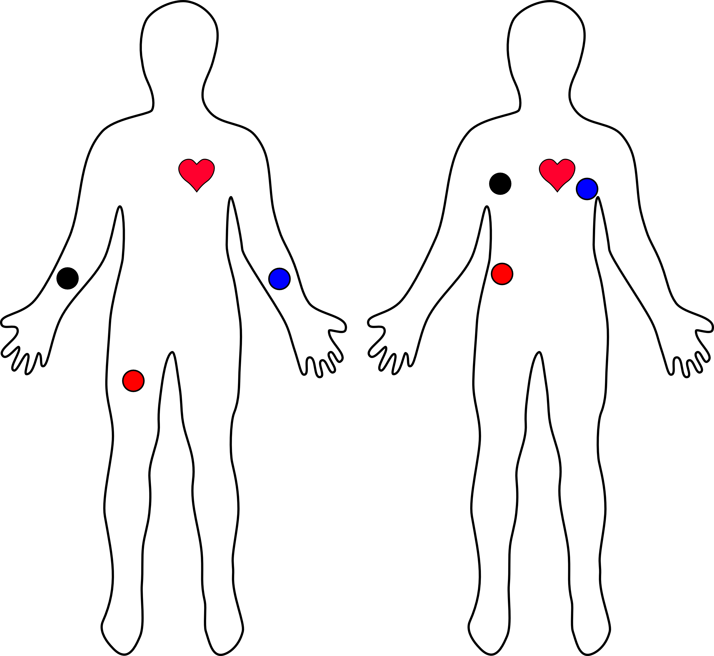

How to obtain?
Currently, the project is in beta phase. It is still not available for public. The project still needs more research and study to further advanced the features as well as provide a more accurate diagnosis to eliminate false positive or false negative results.
How to use?
There are three electrode sensors for this system. You will need to attach two electrode pads to each side of the arm or chest, and one on the limb or on the stomach area. Then you will connect the electrode leads to the pads making sure the leads are on the proper positions. If the leads are attached on wrong side, the data collected as well as the sketch of the heart activity will be inverted.